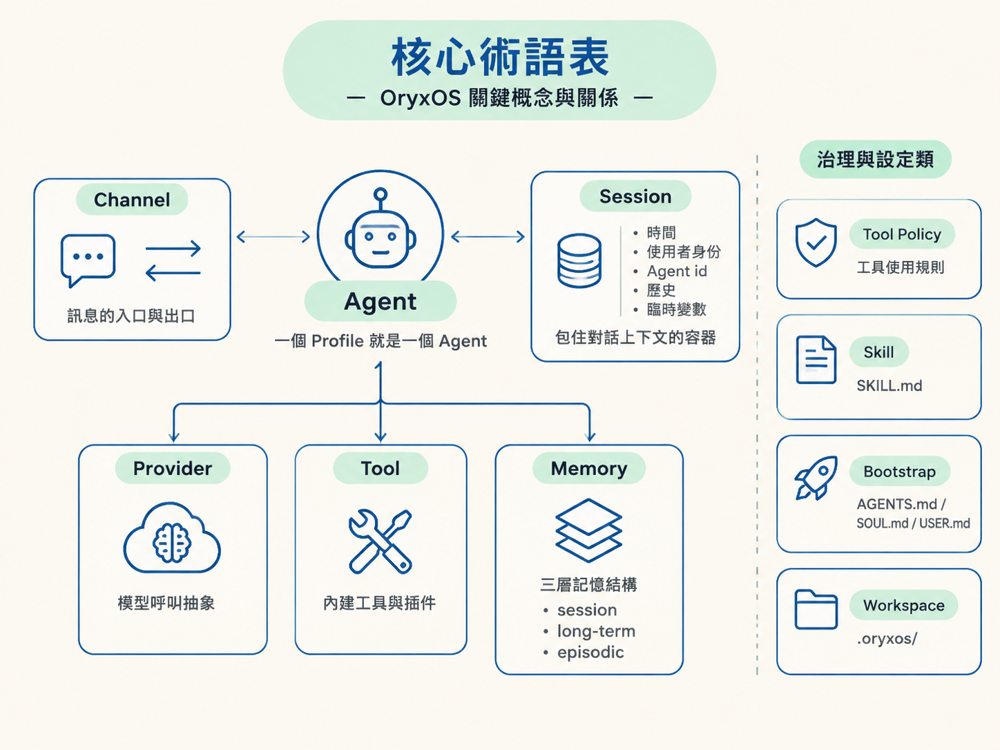
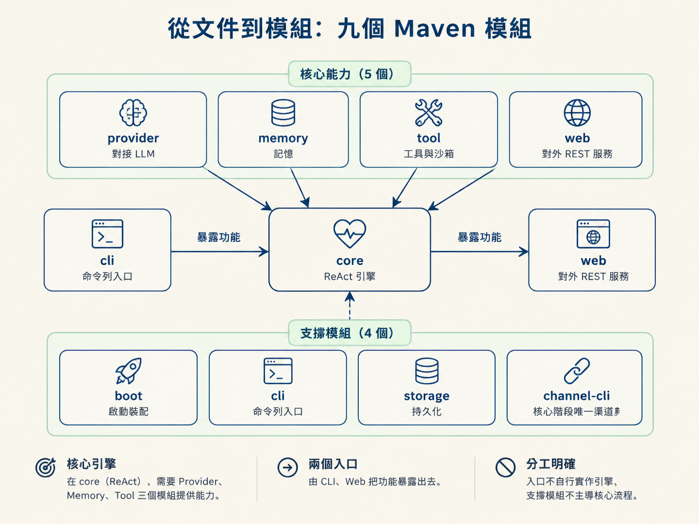

讀一份大型 AI 系統需求時，最容易卡住的往往不是程式碼，而是同一個詞在不同模組代表不同意思。有人說 Agent 指模型，有人說它指整個服務；有人把 Session 當聊天記錄，有人把它當成完整的執行狀態。這些差異像齒輪上的小縫隙，單看不明顯，組起來卻會讓整台機器轉不動。
這一篇先統一 OryxOS 的核心術語，再把概念對回九個 Maven 模組。讀完後，你應該能回答兩個問題：一個功能到底在描述什麼，以及它的程式碼應該住在哪裡。
你會用自己的話定義 Agent、Profile、Provider、Session、Channel、Tool Policy、Skill、Bootstrap、Workspace 等核心術語，並把五大能力對應到九個 Maven 模組。
需求文件最貴的資產，通常不是功能列表，而是一套所有人共用、不會各說各話的詞彙。
當十幾個模組都使用同一套定義，模組之間才接得起來。否則最常見的 AI 大型專案失敗模式就是：每個模組都各自定義 Agent，最後每一塊看起來都能運作，拼在一起卻彼此對不上。
OryxOS 的命名刻意對齊開源 Agent OS 的事實標準，讓熟悉 OpenClaw 或 Hermes 的人可以直接理解系統概念。
| 術語 | 定義 |
|---|---|
| Agent | 一個由 Profile 定義，能呼叫模型與工具並自主執行的實體。 |
| Profile | Agent 的完整 YAML 設定，包含身份、provider、工具、渠道與 bootstrap。一個 Profile 就是一個 Agent。 |
| Provider | 對模型供應商的呼叫抽象，包含 name、model、API key 與 base URL。 |
| ReAct 迴圈 | Reason + Act：想一步、做一步、觀察結果，持續到任務完成或達到上限。 |
| Tool | Agent 可以呼叫的能力，分為內建工具（builtin）與插件（Plugin）。 |
| Memory | 記憶系統，分為 session（會話）、long-term（長期）與 episodic（情景）三層。 |
| Channel | 訊息進出系統的通道，例如 CLI、企業微信與飛書。 |
| Web Service | 把 Agent 引擎暴露成 REST 介面的服務。 |
| Session | 對話上下文的容器，保存時間、使用者身份、Agent id、歷史紀錄與臨時變數。 |
| Sandbox | 工具執行時的安全邊界。 |
| Tool Policy | Profile 層級的工具允許／拒絕清單，是最輕量的治理手段。 |
| Skill | 使用 SKILL.md 描述的能力包，並相容於 agentskills.io 標準。 |
| Bootstrap | 啟動時注入的引導檔，包括 AGENTS.md、SOUL.md 與 USER.md。 |
| Workspace | 工作區目錄 .oryxos/，用來存放 profiles、sessions、skills、logs 與 tools。 |
這張表可以當成後續文件的閱讀索引。看到「Profile」，就知道它是 Agent 的設定；看到「Session」，就知道它描述對話狀態；看到「Channel」，就知道它是訊息的入口或出口。之後不必每次都回頭猜名詞的意思。

術語回答「系統有哪些概念」，模組則回答「這些概念的程式碼住在哪裡」。OryxOS 拆成九個 Maven 模組，分成五個核心能力與四個支撐模組。
| 模組 | 類型 | 負責什麼 |
|---|---|---|
| provider | 核心能力一 | 對接 LLM。 |
| core | 核心能力二 | ReAct 引擎，是整個底座的心臟。 |
| memory | 核心能力三 | 管理記憶。 |
| tool | 核心能力四 | 提供工具與沙箱。 |
| web | 核心能力五 | 提供對外 REST 服務。 |
| boot | 支撐 | 負責啟動裝配，把各個模組組合起來。 |
| cli | 支撐 | 提供命令列入口。 |
| storage | 支撐 | 負責持久化。 |
| channel-cli | 支撐 | 核心階段唯一的渠道，也就是 CLI。 |
這張對應表的實用價值，在於它能幫你快速判斷修改範圍。引擎在 core（ReAct），它需要 Provider、Memory、Tool 三個模組提供能力，再由 CLI、Web 兩個入口把功能暴露出去。

換句話說，模組依賴方向也代表能力的供養方向：入口不應該自己實作引擎，支撐模組也不應該反過來主導核心流程。看到需求時，先找它落在哪個模組，通常就能縮小修改範圍。
需求文件把功能分成三層，而核心階段只做第一層：
把功能範圍和模組放在一起看，可以得到一個很重要的判斷方式：核心階段的九個模組是 OryxOS 的地基，三層範圍則是之後所有取捨的依據。
因此，任何新需求進來時，先問它屬於哪一層。如果它不在核心功能內，就不應該直接塞進目前的最短可跑鏈路；而當核心範圍已經排滿，就代表這個需求必須排隊，而不是悄悄增加更多責任。